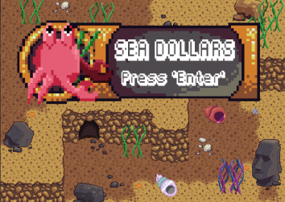
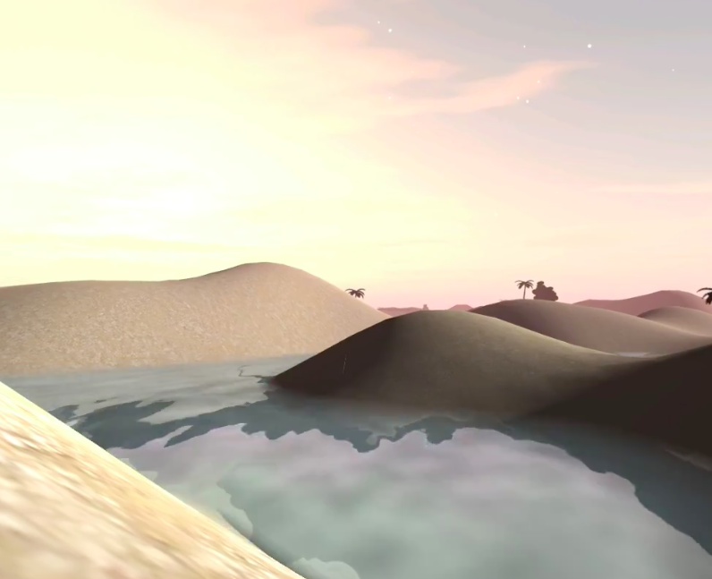
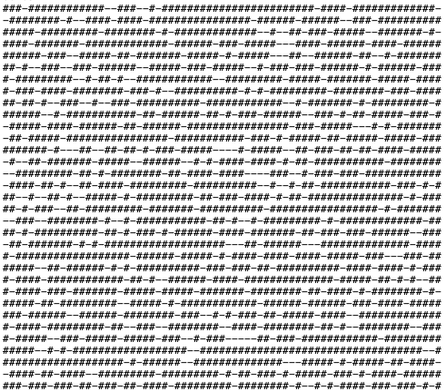
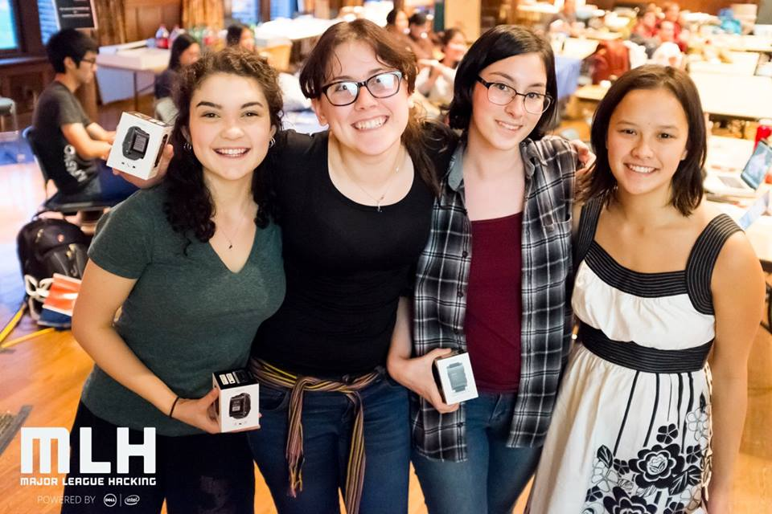
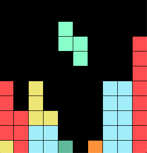

|  |
Sea DollarsGlobal Game Jam 2019 entry A 2D top-down shooter game with multiple levels for the theme of "what home means to you."" Developed by a 4-person team in 48 hours in GameMaker Studio 2 with no prior experience with the software. Personally responsible for ~40% of the programming. Code and executable at Global Game Jam. Skills: GameMaker Language, game design |
|  |
MoodscapeBuilding 21 BLUE fellowship summer 2018 Developed an emotional feedback-sensitive and -responsive virtual reality environment over the course of 6 weeks with no prior experience with Unity or machine learning. Trained a supervised learning algorithm to detect emotion from tone of voice. Writeup available at BLUE Review. Skills: Unity, Python, machine learning |
|  |
Balloons, Mancala, and IslandsAlgorithms & Data Structures final project Three time-efficient solutions to three problems using randomized selection, greedy selection, and disjoint sets. Problem descriptions and solution code for balloons, mancala, and islands. Skills: algorithms, data structures, Java |

|
EZRA DIEDData Structures final project In-browser text-based science fiction game about the future of 3D printing human bodies. Project briefing available here. Demo can be played here. Skills: HTML, CSS, jQuery, JavaScript, JSON |

|
MuSyC: Music, Synaesthesia, ColourWinner "Most Interdisciplinary," HampHack 2016 Presented at the 2016 International Association of Empirical Aesthetics Biennial conference, Vienna. An Arduino device that translates pitch and frequency of sound into colored lights with coordinating to frequency and amplitude, making it an educational and engaging model of music-color synesthesia with many practical applications. Prototype housed in a hand-made plastic body made at the Hampshire Makerspace. More available here. Skills: Arduino |

|
MIPS MMIO calculatorIntroduction to Computer Systems final project Simulated in MARS, uses memory-mapped I/O to print and read. Intakes strings of one or two numbers and an operation, parses the input, converts to base 10, calculates using the floating point coprocessor, rounds, converts back, and returns the result as well as saves it for further operations. Source code available here. Skills: MIPS assembly language |
|  |
MoHo FindWinner "Most Beneficial to Society," HackHolyoke 2015 An iOS app that tells visually impaired users their location on campus, down to building name and classroom number, by using WiFi access points. Built in under 24 hours by a group of four with no prior experience with Objective C. Skills: Objective C, iOS development |
|  |
TetrisAdvanced Java Programming final project Java Tetris application. Available both with a GUI or as a command line game. Skills: Java |